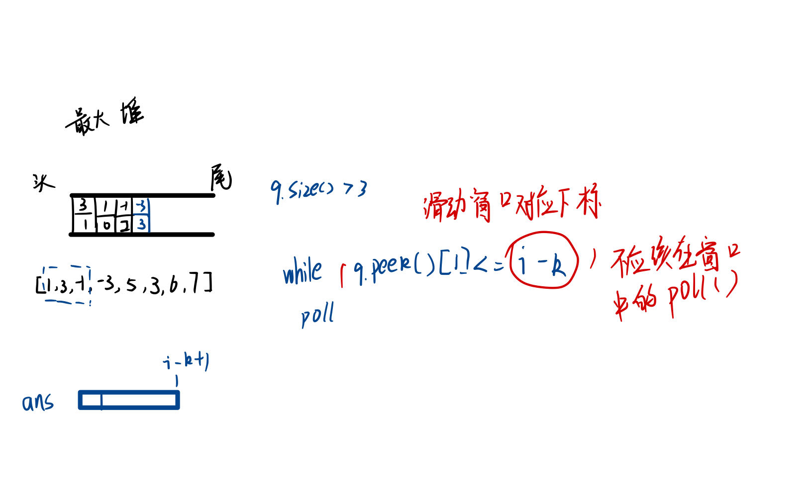
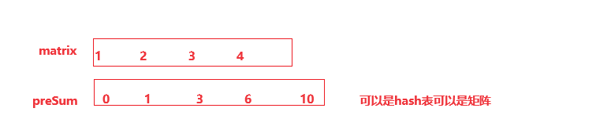
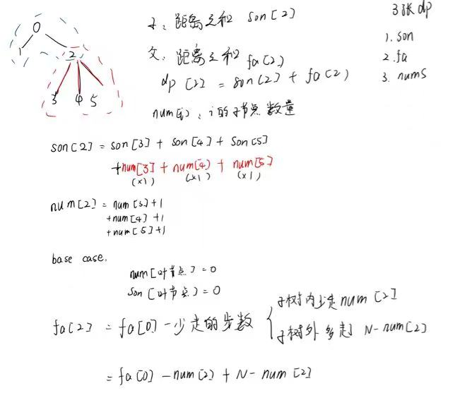
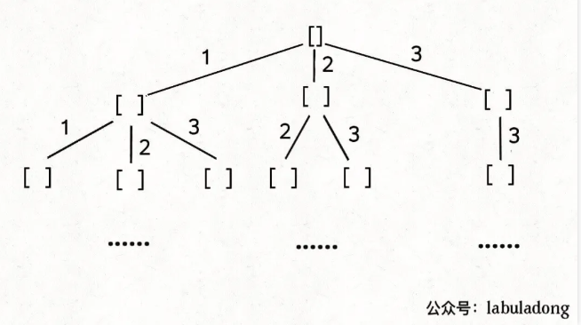
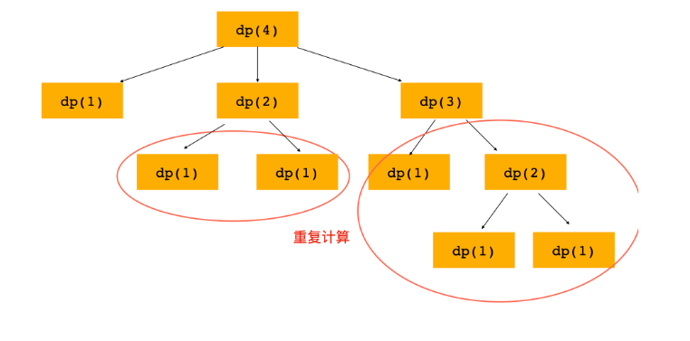

定义：Map <key,value> map=new HashMap<>()
有序Map：Map<key,value> map=new TreeMap<>()
map.containsKey(key)map.put(key,value)map.getOrDefault(Object key, V defaultValue) 是 Java 中 Map 接口的一个方法。这个方法用于获取指定键映射的值。如果此映射不包含键的映射关系，则返回 defaultValue。定义： Map<Integer, Integer> cache = new LinkedHashMap<>(); // 自带双向链表的map
cache.containsKey(key)：是否包含键值对
cache.put(key, value);在末尾加入键值对
cache.remove(key);删除，返回 key 对应的 value
cache.size()：键值对数量
定义：Set
TreeSet 是 SortedSet 的唯一实现类，红黑树实现，树形结构，它的本质可以理解为是有序，无重复的元素的集合。
nSet.add(value)：添加 value
nSet.contains(value)：查找 value
比较
1、重写比较函数
Set<String> set = new TreeSet<>(new Comparator<String>() {
@Override
public int compare(String o1, String o2) {
return o1.compareTo(o2);
}
});
2、lamda
Set<String> sortSet = new TreeSet<String>((o1, o2) -> o2.compareTo(o1));
3、Stearm 流
set.stream().sorted(new Comparator<String>() {
@Override
public int compare(String o1, String o2) {
return o1.compareTo(o2);
}
}).collect(Collectors.toList());
char[] array = str.toCharArray()str.length()s1.compareTo(s2);定义：Integer []nums;
int []nums;
初始化：int []nums=new int[n];//n是变量
二维数组定义：List<List<Integer>>=new ArrayList<List<Integer>>();
int [][]matrix;
nums.length:获取数组长度，最末下标记得减一哦!
初始化：ArrayList<E> objectName =new ArrayList<>(); // 初始化
或：List<E> objectName =new ArrayList<>()
List <Character>[] count =newArrayList[26];//初始化一个字符list数组
for (inti = 0; i < count.length; i++) {
count[i] = newArrayList<>();
}
get（index）
set（index,value）
int []arr=new int[n];toArray(arr)将 arraylist 转换为数组
sort(Comparable)
size()
List <Object> argList = Arrays.asList(args); 将 Integer 对象转成 Object，可以直接打印。
System.out.println("[AOP前置通知] " + methodName + "方法开始了，参数列表：" + argList);
排序比较：
List<String> sorted = new ArrayList<>(res);
sorted.sort(new Comparator<String>() {
@Override
public int compare(String o1, String o2) {
return o1.compareTo(o2);
}
});
排序：Arrays.sort(nums);
赋值： Arrays.fill(dp, 1);//dp 数组全都初始化为 1
数组转化为集合：List <String> list = Arrays.asList("a","b","c");
Queue treenode queue=new ArrayDeque<>();
Deque<Intger> deque=new LinkListed<>()//双向队列
add(node);//=push
poll();//=pop()
size()
Math.max(value1,value2):
final 修饰变量：表示该变量为常量，只能被赋值一次，一旦赋值后不可再更改。
^ 异或运算
& 按位与
三数之和：去重
需要两轮遍历的题
可以与 Map 或 sort（）结合
一般是字符串的题与hashMap结合
1、固定大小的滑动窗口
//更改i（左指针的条件）
while(right-left+1>pArray.length)
2、 不固定大小的滑动窗口
//更改i（左指针的条件）
while(vaild==need.size())
3、滑动窗口最大值对于「最大值」，我们可以想到一种非常合适的数据结构，那就是优先队列（堆），其中的大根堆可以帮助我们实时维护一系列元素中的最大值。
为了方便判断堆顶元素与滑动窗口的位置关系，我们可以在优先队列中存储二元组(num,index)，表示元素 在数组中的下标为 。
哈希表
Map<Node,Node> map= new HashMap<>();//key是旧节点，value是新节点
如果已经创建了就返回新节点。
链表：138. 随机链表的复制 - 力扣（LeetCode）两次遍历
图：133. 克隆图 - 力扣（LeetCode） dfs递归
走最大步数，记录最大步数的结尾
从左遍历一遍，从右遍历一遍。一般是的规律是，对应每个下标都要有输出。
可以以为中心，当前最小=Math.min(左最小，右最小),找一个字符串的最小或最大距离。
可以以为中心，当前乘积=左乘积*右乘积。（前缀和）
238. 除自身以外数组的乘积 - 力扣（LeetCode）
难：隐形：总雨水=各个下标雨水和。左高度=从左遍历最大高度。右高度=从右遍历最大高度。
高度=min(左高度，右高度)；
前缀和可以用数组，也可以用 map。不完全用数组，而是累加sum，放到map中，通过contains查找（target-sum）
e.g.560. 和为 K 的子数组 - 力扣（LeetCode）
e.g. 437. 路径总和 III - 力扣（LeetCode）
1、前缀和  思路: 区间和-》矩阵区间和-》子数组和为 k 前缀和主要适⽤的场景是原始数组不会被修 改的情况下，频繁查询某个区间的累加和。
2、差分数组
思路：
频繁修改区间-》区间，修改数值
（有序）二分查找-》查找左边界-》查找右边界
边界值-》最值。
1、f(x) 必须是在 x 上的单调函数（单调增单调减都可以）。
2、题⽬是让你计算满⾜约束条件 f(x) == target 时的 x 的值。
for (int i = 0; i < reveres.length; i++) {
int a=(i+k)%n;
reveres[a]=nums[i];
}
哈希表
Map<Object,Integer> map=new HashMap<>();
遍历哈希表
for (Map.Entry entry:map.entrySet()) {
(int)entry.getKey();
(int)entry.getValue();//记得类型转换
}
优先队列默认最小堆
写比较器
Comparator<int []> comparator=new Comparator<int[]>() {
@Override
public int compare(int[] o1, int[] o2) {
return o1[1]-o2[1];//最大堆o2-o1
}
};
Queue<int []> q=new PriorityQueue<>(comparator);
215. 数组中的第 K 个最大元素 - 力扣（LeetCode）
75. 颜色分类 - 力扣（LeetCode）（模板题）提交记录有重要提示。
1、滑动窗口
2、双指针
3、k 个最大值——优先队列（存值和下标）
148. 排序链表 - 力扣（LeetCode）（模板题）提交记录有重要提示。
1、优化问题：最长子串、最⻓递增⼦序列、最长回文子串(关键词：最长，子串)
2、重叠子问题、最优子结构、状态独立
3、状态转移方程
「状态」，也就是原问题和⼦问题中变化的变量
方法 1：动态规划
dp[i][j]:i~j 的子串是不是回文
base case
dp[i][i]=ture;
dp[i][j]=ture;(if(j-i<3&&si==sj))
方法 2：中心扩展法：记得回文的奇数偶数有两种情况
| w1 | w2 | w3 | |
|---|---|---|---|
| 物品 1 | |||
| 物品 2 |
dp[i][j]:表示在只有物品 1~物品 i，且最大承重量为 j 时的最大价值。
选择放入 i，找 dp[i-1][j-w(i)]再加上 i 的价值
不选择 i，dp[i][j]=dp[i-1][j];
有约束的 0-1 背包：
多了几个状态。找状态(买 1，不买 1，买 1+2，买 1+3，买 1+2+3)、做选择（最大）
增 删 改 跳
解决两个字符串的动态规划问题，一般都是用两个指针 i,j分别指向两个字符串的最后，然后一步步往前走，缩小问题的规模。
0-1 背包
选 dp[i-1][j-nums[i-1];]
不选 dp[i-1][j]
完全（子集）背包（可重复选）——2维2循环
选 dp[i][j-nums[i-1];]
不选 dp[i-1][j]
定义：dp[i][j]:i 排列是长度，j 是目标值
选最后一个为 1：dp[i-1][j-nums[1];]||dp[j-nums[1];]
选最后一个为 2：dp[i-1][j-nums[2];]||dp[j-nums[2];]
最后要求和
明确「状态」 -> 定义 dp 数组/函数的含义 -> 明确「选择」-> 明确 base case。
一维线性问题
一维 dp[i]定义
二维 dp[i][j]定义
二维线形问题
状态转移方程
看成图然后遍历。不一样的是矩阵中的点是代表边而不是代表边。因此遍历的时候不能通过矩阵元素找邻居，而是逐个上下左右遍历。
3.19 蚂蚁笔试
牛客网 - 找工作神器|笔试题库|面试经验|实习招聘内推，求职就业一站解决_牛客网 (nowcoder.com)
并：让 u 节点的父节点=等于 v 的父节点（调用查）
查：查当前节点在那个根当中，返回根。
1、单词查找问题可以用 id，代替回溯中的路径。
2、通过”淹没“算法来代替维护 visited 数组。
记忆化搜索

模板：
for 选择 in 选择列表:
# 做选择
将该选择从选择列表移除
路径.add(选择)
backtrack(路径, 选择列表)
# 撤销选择
路径.remove(选择)
将该选择再加入选择列表
注意：
结合括号生成，可以发现，一般来是先考虑做选择之后（进入递归之后）来判断当前选择是否合法，而不是做选择前判断
1、回文、子串、子序列可以用动态规划优化
2、想一种暴力解
列出所有可以分割的子串-并判断是不是都是回文的
分割子串：getsub（i）分割起点为 i 的字符串
for(j=i)
{
sub（i，j）是不是回文
是则getsub(i+j)
不是则j++；
}
判断回文
1、记忆化
如果是回文，set.add(sub);
如果set.contains(a),则a是回文
2、动态规划
boolean[][] dp = new boolean[n][n];
for(int i=n)
for(int j=1)
{
if(a[i]==a[j])
dp[i][j]=dp[i+1][j-1];
else
dp[i][j]=false;
}
我们通过保证元素之间的相对顺序不变来防止出现重复的子集。
//子集/组合问题
backtravel(int i,int []nums){
if()……
for(int j=i;j<nums.length;j++){
track.add(j);
backtravel(j+1,nums)
track.removeLast();
}
}
//全排列
backtravel(int []nums){
for(int i=0;i<nums.length;i++){
if(track.length()==nums.length){
res.add(new LinkedList(track));
return;
}
//没有使用
if(used[i])
continue;
used[i]=true;
track.add(i);
backtravel(i+1,nums)
//撤销选择和使用
track.removeLast();
used[i]=false;
}
}
如果一个节点有多条值相同的树枝相邻，则只遍历第一条，剩下的都剪掉，不要去遍历 体现在代码上，需要先进行排序，让相同的元素靠在一起，如果发现 nums[i] == nums[i-1]，则跳过。
//子集/组合
Arrays.sort(nums);
backtravel(int i,int []nums){
for(int j=i;j<nums.length;j++){
//添加剪枝
if(j>i&&nums[j]==nums[j-1])
return;
track.add(j);
backtravel(j+1,nums)
track.removeLast();
}
}
//排列
Arrays.sort(nums);
backtravel(int i,int []nums){
for(int i=0;i<nums.length;i++){
if(track.length()==nums.length){
res.add(new LinkedList(track));
return;
}
if(i>0&&nums[i]==nums[i-1]&&used[i-1])
continue ;
//没有使用
if(used[i])
continue;
track.add(i);
backtravel(i+1,nums)
//撤销选择和使用
track.removeLast();
used[i]=false;
}
}
1、排序 2、不需要 used 数组 3、选择合适的 basecase 结束条件 
377. 组合总和 Ⅳ - 力扣（LeetCode） 与兑零钱的不同，就是不同的排列需要看作 2 种组合。所以为什么有 3 个 for？ 因为虽然 dp 定义相同，但是，由于不同的排列需要看作 2 种组合，因此状态转移方程不同，需要固定最后一个数为 nums[k]再相加 
//子集/组合
backtravel(int i,int []nums){
for(int j=i;j<nums.length;j++){
//添加剪枝
track.add(j);
//注意是j不是j+1;
backtravel(j,nums)
track.removeLast();
}
}
//排列
backtravel(int i,int []nums){
for(int i=0;i<nums.length;i++){
if(track.length()==nums.length){
res.add(new LinkedList(track));
return;
}
track.add(i);
backtravel(i+1,nums)
//撤销选择和使用
track.removeLast();
}
}
1、折半思想 2、奇数=yyx 3、偶数=y*y（y 等于一半的幂）